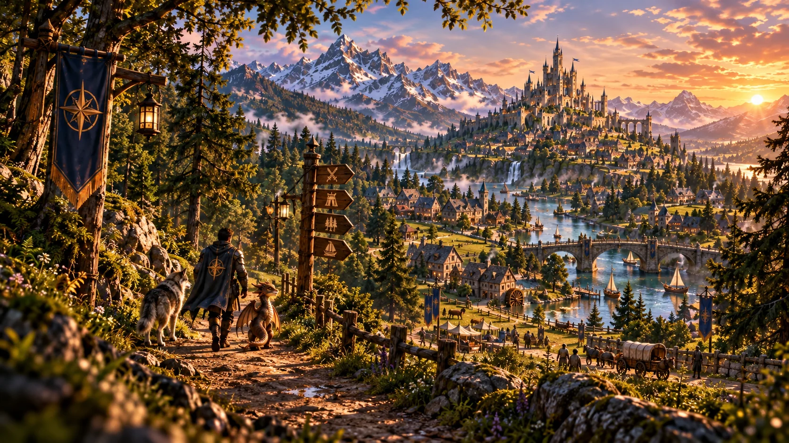

1 création présentée
Cyberpunk 2077
Consultez le projet, sa compatibilité déclarée et ses limites. Aucun fichier à télécharger.
Les univers du catalogue
Retrouvez les jeux représentés dans nos fiches de créations. Ces projets illustrent les outils MODARYX : ils ne constituent ni des fichiers distribués, ni une compatibilité testée.

1 création présentée
Consultez le projet, sa compatibilité déclarée et ses limites. Aucun fichier à télécharger.
1 création présentée
Consultez le projet, sa compatibilité déclarée et ses limites. Aucun fichier à télécharger.
1 création présentée
Consultez le projet, sa compatibilité déclarée et ses limites. Aucun fichier à télécharger.
Hubs éditoriaux sourcés
Ces hubs apportent des repères, catégories et guides utiles. Ils n’ajoutent aucun fichier distribué et n’inventent aucune compatibilité absente des sources officielles.
À venir · 19 novembre 2026
Hub éditorial fondé sur les informations officielles Rockstar actuellement publiées ; aucun support PC ou mod n’est supposé.
Ouvrir le hub GTA VI →PC officiel
Hub PC avec taxonomie de mods, guides de préparation et distribution MODARYX explicitement fermée tant que le corpus autorisé manque.
Ouvrir le hub RDR2 →Explorer en confiance
Le catalogue permet de comparer les types de projets et leurs niveaux de preuve. Un jeu présent ici n’implique aucun partenariat avec son éditeur.